Unofficial study solution; not an official GTU answer key. Answers have not been independently verified. English text reflows; source equations, diagrams and Gujarati retain their original appearance. Use Enlarge image to inspect them.
આ બિનસત્તાવાર અભ્યાસ ઉકેલ છે, સત્તાવાર GTU જવાબવહી નથી. PDF માંથી ગુજરાતી લખાણ સાચું નીકળતું નથી, તેથી દરેક જવાબ મૂળ ચિત્રરૂપે જાળવ્યો છે. વાંચવા માટે ચિત્ર મોટું કરો. મૂળ પ્રશ્ન અને પરીક્ષાના વિકલ્પોની સૂચનાઓ અનુસરો.
Coverage: all five questions and all printed OR alternatives are solved: 28 parts. The authentic English question is retained in both language views; answers are in English and Gujarati.
Printed instructions: attempt all questions; make suitable assumptions; figures on the right indicate full marks; simple and non-programmable scientific calculators are permitted; the English version is authentic.
Interpretation: the printed phrase ‘plane sphere’ in Q2 OR(c) is treated as steady radial conduction through a hollow spherical shell; its assumptions and the limitation for a solid sphere are explained in the answer. Diagrams are schematic.
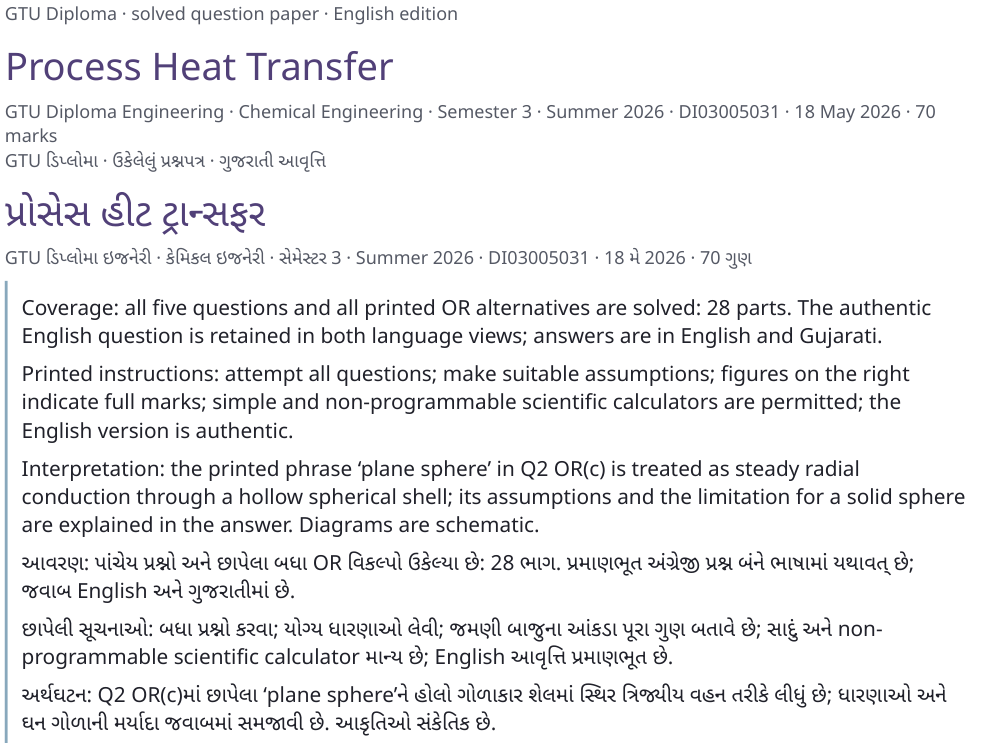
Question 1
Q1 · Modes of heat transfer and insulation
Q.1 (a) · Explain three basic modes of heat transfer with one example each. · 3 marks
Mode Mechanism Example
Conduction Energy transfer through matter by microscopic interactions, without bulk motion.
Heat through a metal wall.
Convection Transfer between a surface and moving fluid, combining conduction at the surface with fluid motion.
A fan cooling a hot pipe.
Radiation Transfer by electromagnetic waves; no material medium is required.
Heat from the sun reaching Earth.
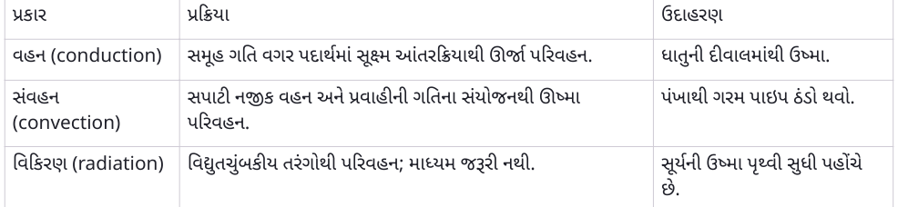
Q.1 (b) · State general laws of Heat Transfer for different modes. · 4 marks
decreasing temperature.
Newton’s law of cooling, convection: Q̇ = h A (Ts − T∞). h is the surface heat-transfer coefficient; T∞ is the bulk fluid temperature.
Stefan–Boltzmann law, blackbody emission: Eb = σ T⁴. For a real surface E = ε σ T⁴ with total hemispherical ε.
q″ is heat flux in W m⁻², Q̇ is heat-transfer rate in W, A is area in m², k is in W m⁻¹ K⁻¹, h is in W m⁻² K⁻¹ and σ = 5.670 × 10⁻⁸ W m⁻² K⁻⁴. Radiation temperatures are absolute.
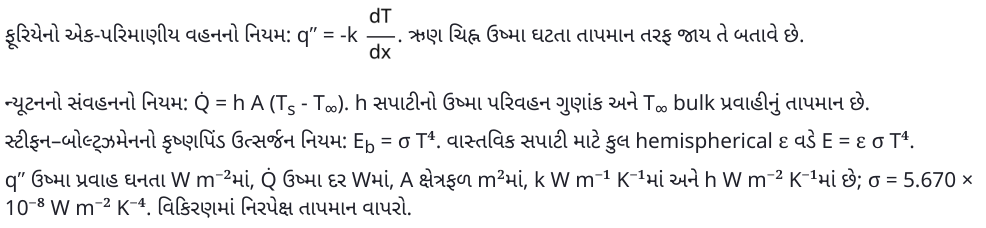
Q.1 (c) · Derive the equation for Critical Radius of Insulation. · 7 marks
For a cylindrical pipe insulated from radius r₁ to r₂, find the outer radius giving maximum heat loss.
• Steady radial flow, constant insulation k and external h, fixed pipe surface T₁ and ambient T∞; no heat generation or radiation. L and r₁ are fixed.
Insulation between radii r₁ and r₂; convection occurs at the outer surface.
Derivation


k is in W m⁻¹ K⁻¹, h in W m⁻² K⁻¹, so the critical radius is in m. The derivative changes from negative
to positive at this radius, so resistance is minimum and heat loss maximum. For r₂ > rcritical, further insulation lowers heat loss.
If the initial radius r₁ is below the critical radius, adding insulation can initially increase heat loss. If
r₁ is already at or above it, additional insulation reduces heat loss. For the analogous spherical shell

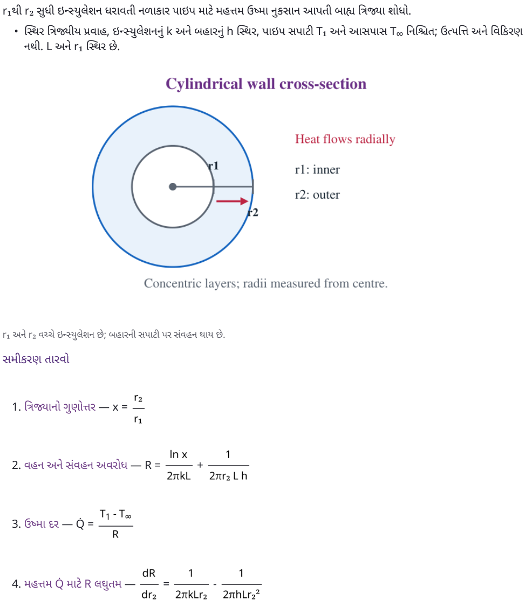

Q.1 (c) · Derive the equation for steady state heat conduction through composite plane wall. · OR · 7 marks
Find the steady heat rate through three plane layers in series.
• One-dimensional, steady, no generation; constant k in each layer, perfect contact, common area A and negligible edge loss.
• Let the boundary and interface temperatures be T0, T1, T2, T3; T0 is hotter.

The same steady heat rate crosses every layer.
Derivation


![Q.1 (c) OR: preserved source formula, table or diagram, page 7. Extracted text context (formula notation may be incomplete): 3. Add all three drops — T0 − T3 = Q̇ [ + + ]](summer-2026.assets/0017.webp)

Q̇ is in W and each Rᵢ is in K W⁻¹. Add film and contact resistances if they are not negligible.

Question 2
Q2 · Thermal properties, convection and radial conduction
Q.2 (a) · Define Thermal conductivity, Thermal Insulation and thermal diffusivity. · 3 marks
Thermal conductivity k is the heat flux per unit temperature gradient in magnitude; unit W m⁻¹ K⁻¹. Fourier’s law:
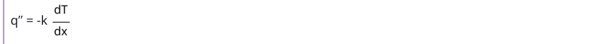
Thermal insulation is a low-conductivity material or layer used to resist heat transfer, such as mineral wool around a hot pipe.
Thermal diffusivity measures how quickly a temperature disturbance spreads through a material; unit m² s⁻¹.
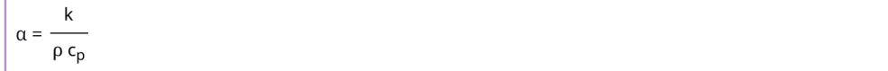
Here ρ is density and cp specific heat.
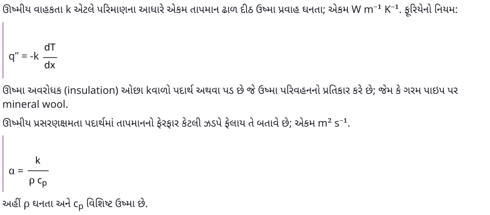
Q.2 (b) · Give the Significance of dimensionless groups like (a) Prandtl No (b) Reynolds No. · 4 marks
Prandtl number: it compares momentum diffusivity ν to thermal diffusivity α.
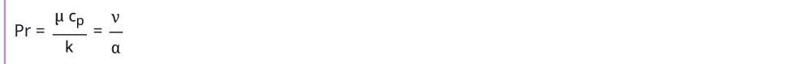
High Pr means momentum diffuses faster than heat; it influences thermal boundary-layer thickness and convection correlations.
Reynolds number: it compares inertia to viscous effects.
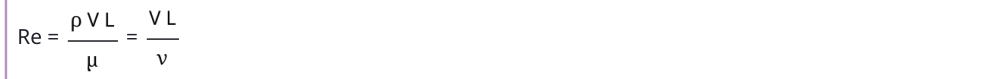
It helps characterize flow regime and select a heat-transfer correlation; the characteristic length L depends on geometry.
Here μ is dynamic viscosity, ρ density, V velocity, k fluid conductivity and cp specific heat. Both groups are dimensionless.
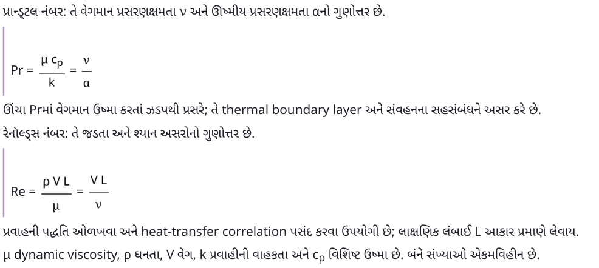
Q.2 (c) · Derive the equation of heat conduction through composite cylinder. · 7 marks
Consider two concentric cylindrical layers: k₁ between r₁ and r₂, and k₂ between r₂ and r₃, with length L.
• Steady radial conduction only; constant k per layer, perfect interface contact, no heat generation or end losses.
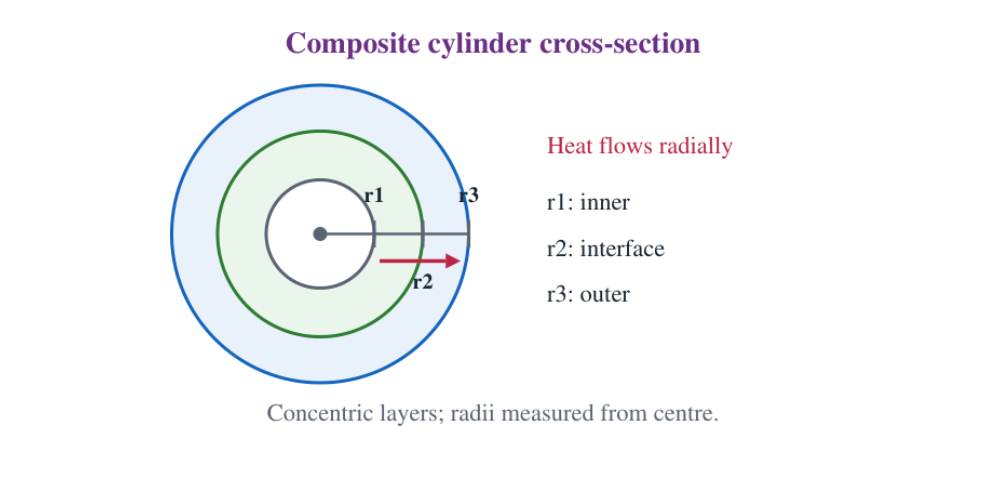
The inner and outer layers conduct the same steady heat rate.
Derivation
5. Drops across each layer — T1 − T2 = Q̇ R1; T2 − T3 = Q̇ R2 6. Add the drops — T1 − T3 = Q̇ (R1 + R2)
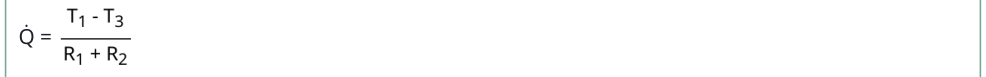
ln is the natural logarithm. R is in K W⁻¹ and Q̇ in W. More layers and film resistances can be added
in series.
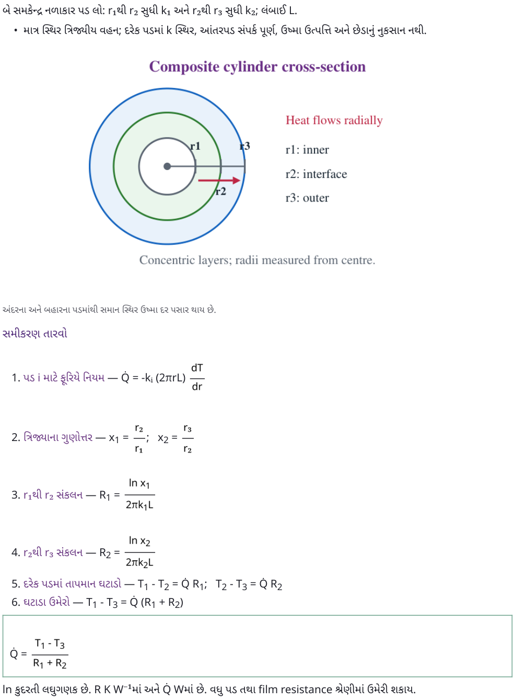
Q.2 (a) · Explain Newton’s Law of convective heat transfer. · OR · 3 marks
Newton’s law of cooling states that the convective heat rate is proportional to exposed area and the temperature difference between a surface and the bulk fluid.
Q̇ = h A (Ts − T∞)
h is the convection coefficient (W m⁻² K⁻¹), A the area (m²), and temperatures are in K or °C differences. If Ts is higher, Q̇ is heat loss from the surface. h depends on fluid, flow and geometry.
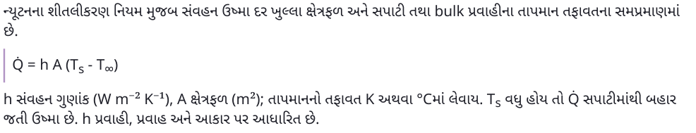
Q.2 (b) · Differentiate between Free Convection and Forced Convection. · OR · 4 marks
![Q.2 (b) OR: preserved source formula, table or diagram, page 13. Extracted text context (formula notation may be incomplete): Basis Free (natural) convection Forced convection Cause of fluid motion Buoyancy from density differences due to temperature. External device such as a pump, fan or blower. Power No external device is required to drive this motion. External mechanical power is required. Heat-transfer coefficient Usually lower under otherwise comparable conditions. Usually higher when externally driven flow is strong. Example Still air rising beside a hot pipe. Water pumped through an exchanger.](summer-2026.assets/0035.webp)
Both transfer heat between a surface and a fluid; mixed convection is possible.
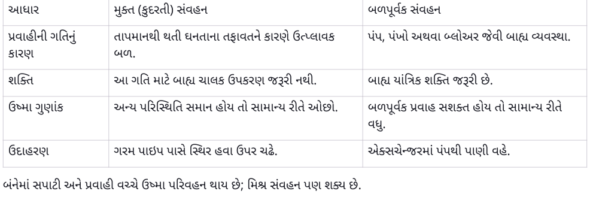
Q.2 (c) · Derive the equation of heat conduction through a plane sphere. · OR · 7 marks
The printed phrase “plane sphere” is ambiguous. Interpret it as a hollow spherical shell with steady one-dimensional radial conduction, not a plane wall.
• r₁ > 0, r₂ > r₁, surface temperatures T₁ > T₂; constant k, no generation and perfect spherical symmetry.
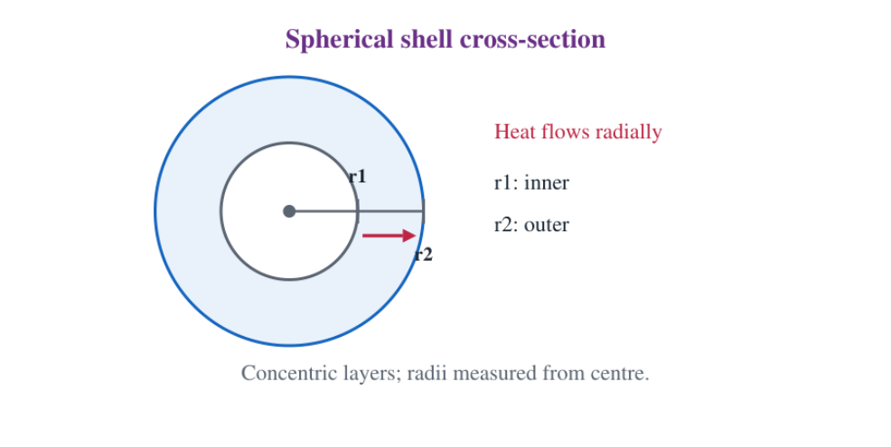
A spherical shell shown in cross-section.
Derivation
1. Radial area — Ar = 4πr²
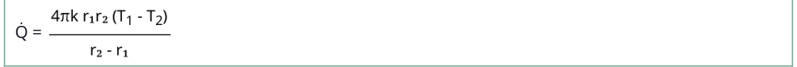
For a complete solid sphere with no internal generation and finite centre temperature, a nonzero steady outward heat rate cannot be imposed at r = 0; a source and different model would be required.
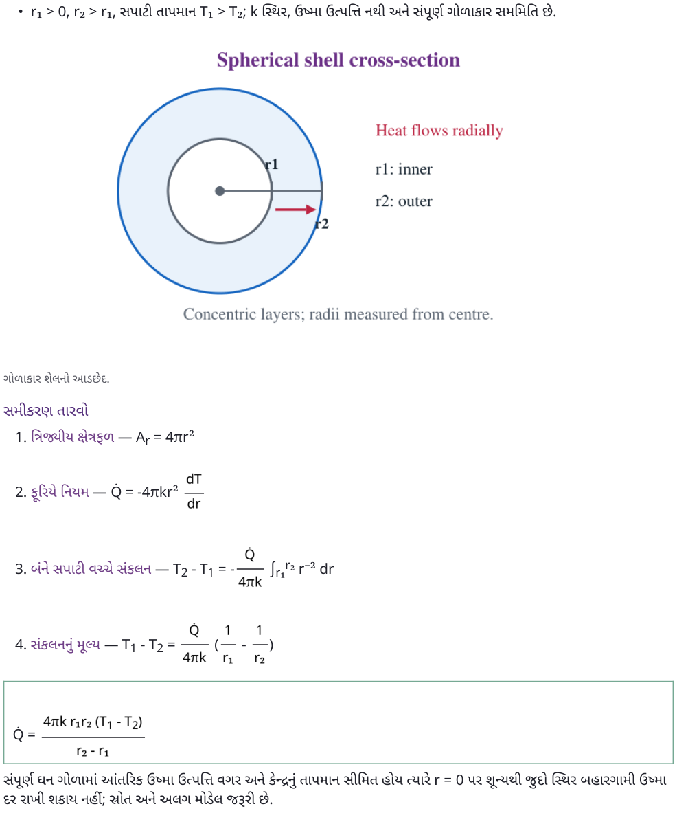
Question 3
Q3 · Convection, radiation and boiling
Q.3 (a) · State the Significance of Nusselt Number. · 3 marks
Nusselt number compares convection at a fluid–surface boundary with conduction through a fluid layer of characteristic length L.
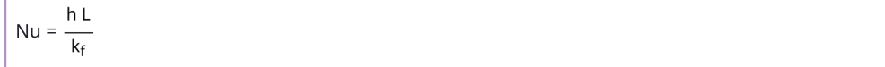
h is the convective coefficient and kf is fluid conductivity. Nu is dimensionless; larger values indicate stronger convective transfer relative to this conductive reference. Correlations such as Nu = f(Re, Pr) help estimate h for a specified geometry and regime.
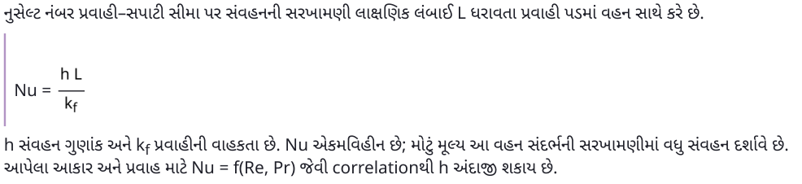
Q.3 (b) · State Wien’s Displacement Law. · 4 marks
Wien’s displacement law: the wavelength at which blackbody spectral emissive power per unit wavelength is maximum is inversely proportional to its absolute temperature.
λmax T = b = 2.898 × 10⁻³ m K
T must be in kelvin. As T increases, the peak shifts to shorter wavelengths. For T = 5800 K, λmax ≈ 0.500 μm. The peak depends on whether the spectrum is expressed per unit wavelength or per unit frequency.
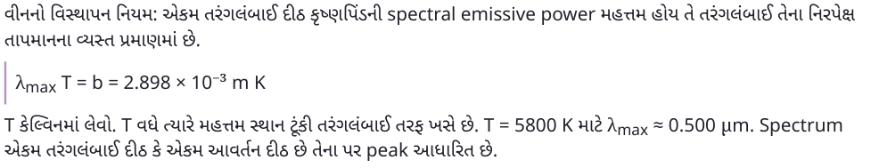
Q.3 (c) · Explain Concept of a black body. · 7 marks
A blackbody is an ideal surface that absorbs all incident radiation at every wavelength and direction: α = 1, with no reflection or transmission.
At a given temperature it emits the maximum possible radiation for an equilibrium surface: ε = 1 and Eb = σT⁴. A small hole in a heated cavity approximates a blackbody.
• It is a perfect absorber and a reference ideal emitter; actual surfaces have emissivity at or below one.
• The cavity aperture appears nearly black because incident rays undergo repeated internal reflections and absorption.
• Total emissive power is Eb = σT⁴, where T is in kelvin and σ = 5.670 × 10⁻⁸ W m⁻² K⁻⁴.
• Its peak wavelength shifts according to λmax T = 2.898 × 10⁻³ m K.
• Examples of use: radiation thermometry and comparing the emissivity of real surfaces.
A real cavity only approximates the ideal; its aperture and walls do not make a perfectly black surface.
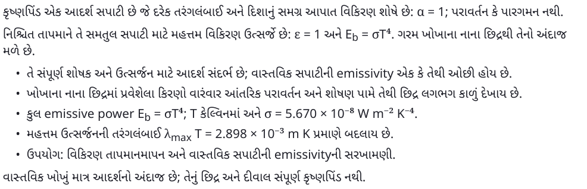
Q.3 (a) · State Stefan Boltzmann Law with formula for radiation. · OR · 3 marks
The total radiation emitted per unit area by a blackbody is proportional to the fourth power of its absolute temperature.
Eb = σ T⁴
σ = 5.670 × 10⁻⁸ W m⁻² K⁻⁴, T is in K, and Eb is in W m⁻². For a real surface, total hemispherical emission is E = εσT⁴.
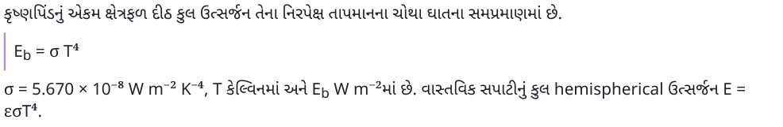
Q.3 (b) · Explain Emissive Power and Emissivity. · OR · 4 marks
Emissive power E: radiation emitted by a surface per unit area per unit time, W m⁻².
Emissivity ε: ratio of emission from a surface to that of a blackbody at the same temperature and on the same spectral and directional basis.
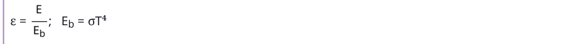
For total hemispherical emission E = εσT⁴, 0 ≤ ε ≤ 1. Example: E = 0.7Eb gives ε = 0.7; emissivity is dimensionless.
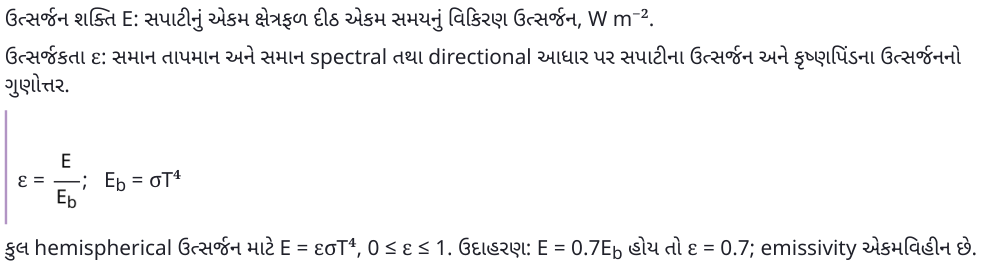
Q.3 (c) · Explain Phenomena of Boiling with sketch. · OR · 7 marks
Pool boiling is boiling from a heated surface in an essentially stationary liquid; motion is produced mainly by buoyancy and bubbles. The boiling curve relates wall heat flux to wall superheat ΔT = Ts − Tsat.

Schematic pool-boiling curve; the labelled regions are described below.
• A — natural convection: at small superheat there is little or no bubble formation; buoyant circulation carries heat.
• B — nucleate boiling: bubbles form at surface sites, grow and detach; agitation gives a rapid rise in heat flux.
• C — critical heat flux (CHF): maximum heat flux on the nucleate branch; excessive heating may cause a sudden wall-temperature rise.
• C to D — transition boiling: unstable vapour patches cover and uncover the surface; heat flux decreases as superheat rises.
• D to E — stable film boiling: a vapour blanket insulates the wall; at very high temperatures radiation contributes and heat flux rises again.
D is the minimum-heat-flux region, associated with the Leidenfrost point. Operating near CHF can damage equipment.
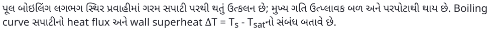
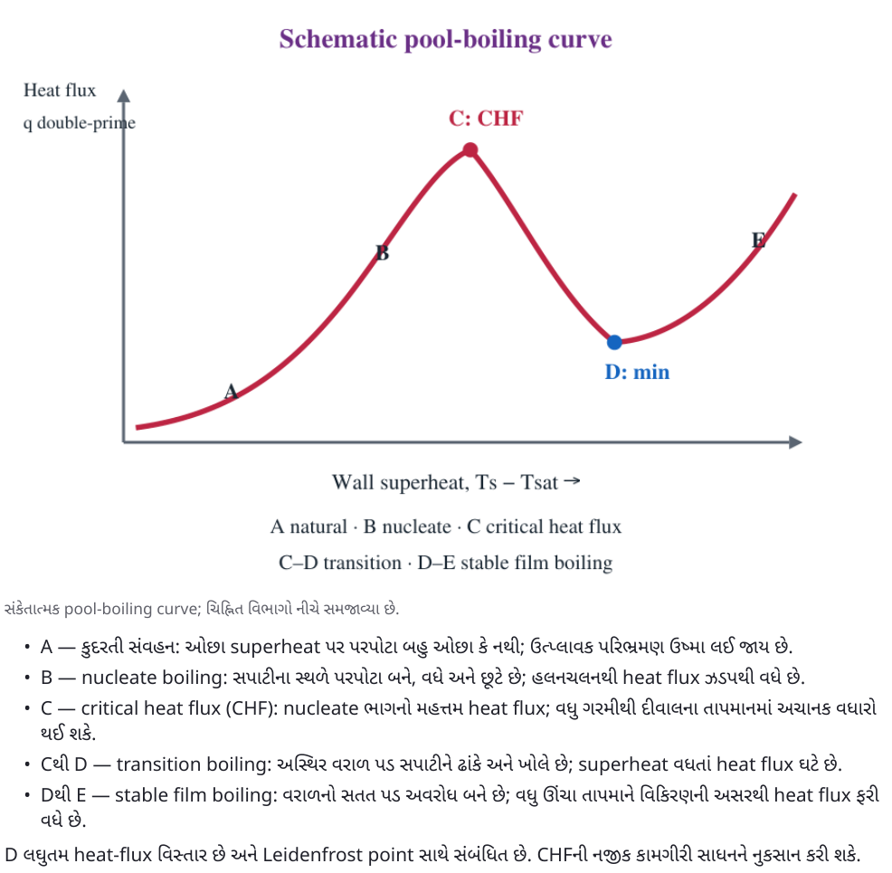
Question 4
Q4 · Condensation and heat exchangers
Q.4 (a) · Differentiate between Dropwise and Filmwise Condensation. · 3 marks
![Q.4 (a): preserved source formula, table or diagram, page 21. Extracted text context (formula notation may be incomplete): Basis Dropwise condensation Filmwise condensation Surface wetting Condensate forms separate droplets on a poorly wetted surface. Condensate wets the surface and forms a continuous liquid film. Resistance Much bare surface is exposed; liquid resistance is generally lower. Liquid film adds thermal resistance. Heat transfer Normally much higher coefficient under comparable conditions. Normally lower coefficient. Practical behavior Droplets grow and fall; durable promoters are difficult to maintain. Film drains continuously; common on clean wettable surfaces.](summer-2026.assets/0054.webp)
Both release latent heat when vapour condenses; non-condensable gases and surface condition affect performance.

Q.4 (b) · Derive expression of LMTD for Counter Flow. · 4 marks
For countercurrent flow, define terminal temperature differences at the two physical ends of the exchanger.
• Steady, no external heat loss, constant U and fluid heat-capacity rates Ch and Cc; sensible single-phase heating and cooling.
• Both terminal differences are positive. Let dQ̇ be the positive heat rate transferred in a small section, moving along the hot-flow direction.
Derivation

2. Local heat transfer — dQ̇ = U ΔT dA

4. Integrate from end 1 to end 2 — β Q̇ = ΔT2 − ΔT1


ln denotes natural logarithm. When the two terminal differences are equal (β = 0), the limiting LMTD equals that common difference. For multipass or crossflow equipment a correction factor may be needed.


Q.4 (c) · Discuss construction and working of Shell and Tube Heat Exchanger. · 7 marks
Example: one shell pass and two tube passes (1–2 exchanger). The two fluids remain separated by the tube walls.

Simplified longitudinal section: red is the tube-side fluid; green is the shell-side fluid.
Construction
• A cylindrical shell contains a bundle of tubes fixed in tube sheets. Channel heads and a partition divide the tube-side flow into two passes.
• Alternating shell-side baffles support the tubes and guide shell fluid across the bundle. Separate nozzles carry each inlet and outlet.
Working
• Tube-side fluid enters the upper pass, flows to the far head, returns through the lower pass and leaves at the inlet end.
• Shell-side fluid enters one nozzle, passes through the shell around the tubes and leaves through its outlet; the baffles increase crossflow and turbulence.
• Heat transfers from the hot fluid through a tube wall to the cold fluid, without intentional mixing. Condensers, coolers and process heaters use such equipment.
One shell pass and two tube passes describe flow paths, not the number of individual tubes. The temperature-driving force may require a multipass LMTD correction factor.
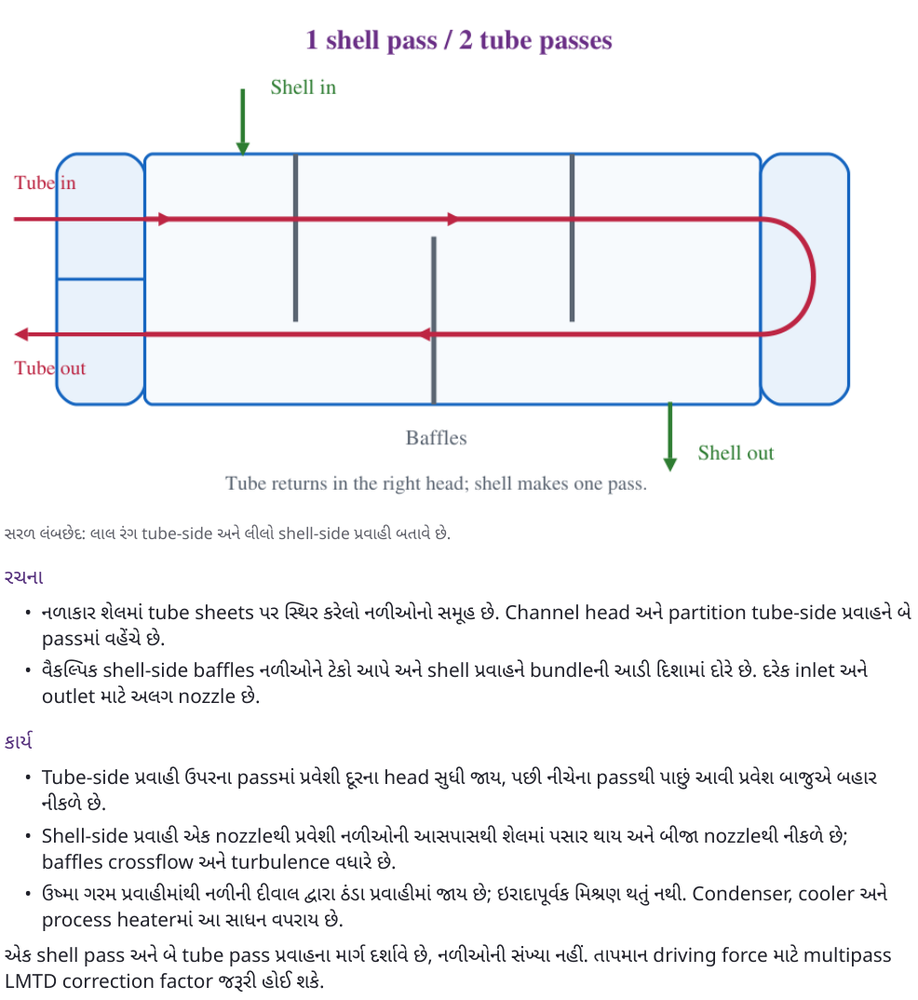
Q.4 (a) · Define 1. Gray body 2. Opaque body 3. Transparent body · OR · 3 marks
Gray body: an idealisation with emissivity independent of wavelength over the range considered at a given temperature.
Opaque body: transmits none of the incident radiation on the stated spectral basis, τ = 0; hence α + ρ = 1.
Transparent body: transmits radiation in the specified wavelength band; an ideal perfectly transparent body has τ = 1. Real materials can transmit one band but absorb another.
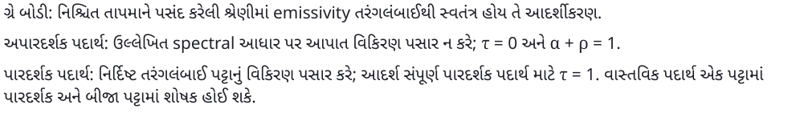
Q.4 (b) · Give the classification of heat exchanger. · OR · 4 marks
Heat exchangers can be classified on several independent bases:
![Q.4 (b) OR: preserved source formula, table or diagram, page 27. Extracted text context (formula notation may be incomplete): Basis Types and purpose Function Heater or cooler changes fluid temperature; condenser changes vapour to liquid; evaporator or reboiler vaporises liquid. Flow pattern Parallel flow: both fluids enter the same end; countercurrent: opposite directions; crossflow: directions approximately perpendicular. Construction Double-pipe: concentric pipes; shell-and-tube: tube bundle in shell; plate: thin plates with alternate channels; spiral: spiral passages. Contact Indirect (surface): wall separates streams; direct contact: suitable fluids contact and exchange heat directly.](summer-2026.assets/0067.webp)
Regenerative exchangers alternatively store and release heat in a matrix. Flow pattern and construction may be combined, for example a countercurrent double-pipe exchanger.
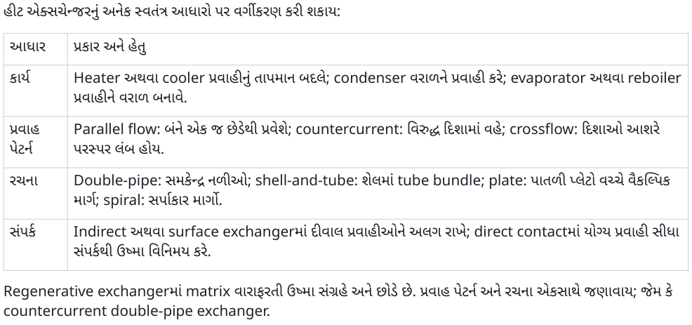
Q.4 (c) · Explain Plate Type Heat Exchanger with neat sketch. · OR · 7 marks
A plate heat exchanger transfers heat through a stack of thin plates between alternating fluid channels.
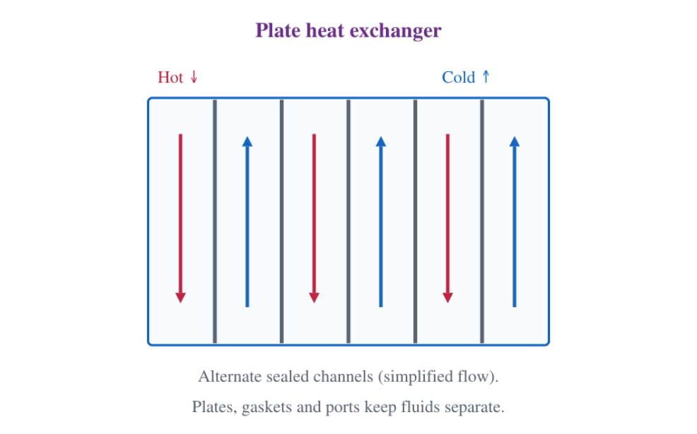
Simplified alternate channels; arrows show a countercurrent arrangement.
Construction
• A pack of corrugated metal plates is held between a fixed frame and a movable pressure plate.
• Ports distribute the streams; gaskets or welded joints seal the passages and keep the two fluids separate.
• Corrugations increase turbulence and support the plates. Additional plates can increase area.
Working
• Hot and cold fluids enter alternate channels, usually in opposite directions, and leave through separate ports.
• Heat crosses the thin plates from hot to cold; there is no intentional mixing.
Uses and limits: compact and efficient for liquid heating or cooling, such as food processing; gasket temperature and pressure limits, fouling and leakage must be considered.
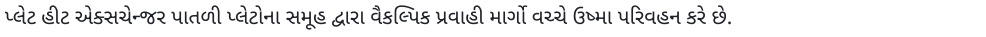
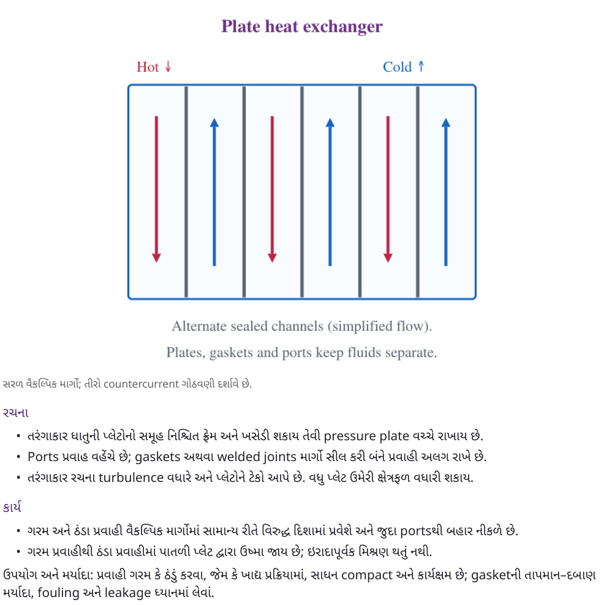
Question 5
Q5 · Evaporation and double-pipe exchangers
Q.5 (a) · Define evaporator capacity and economy. · 3 marks
Evaporator capacity is the mass of solvent evaporated per unit time, commonly kg h⁻¹.
Steam economy is the mass of solvent evaporated per mass of heating steam supplied:
Example: 1000 kg water evaporated in 1 h with 500 kg steam gives capacity 1000 kg h⁻¹ and economy 2 kg water per kg steam. A multiple-effect arrangement can achieve such an economy.
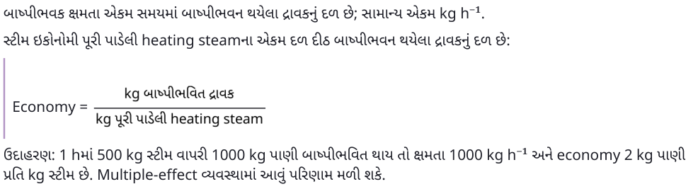
Q.5 (b) · Explain important characteristics of liquids for evaporation. · 4 marks
Important liquid characteristics for evaporator selection and operation:
• Boiling-point elevation: solute raises solution boiling temperature and reduces the available temperature difference.
• Viscosity: concentrated liquids are often more viscous, reducing circulation and heat transfer.
• Heat sensitivity: some products decompose at high temperature; vacuum or short residence time may be needed.
• Fouling, crystallisation and corrosion: deposits reduce U and may block tubes; material choice and cleaning are important.
• Foaming: stable foam can entrain liquid in vapour, so separator design or antifoam may be needed.
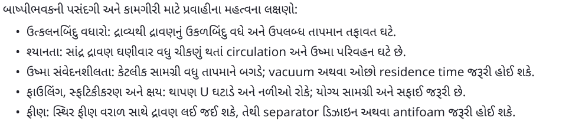
Q.5 (c) · Discuss Types of Evaporators with neat diagram. · 7 marks
An evaporator boils solvent from a solution to concentrate it. The choice depends on viscosity, fouling, heat sensitivity and capacity.
1. Short-tube natural-circulation evaporator
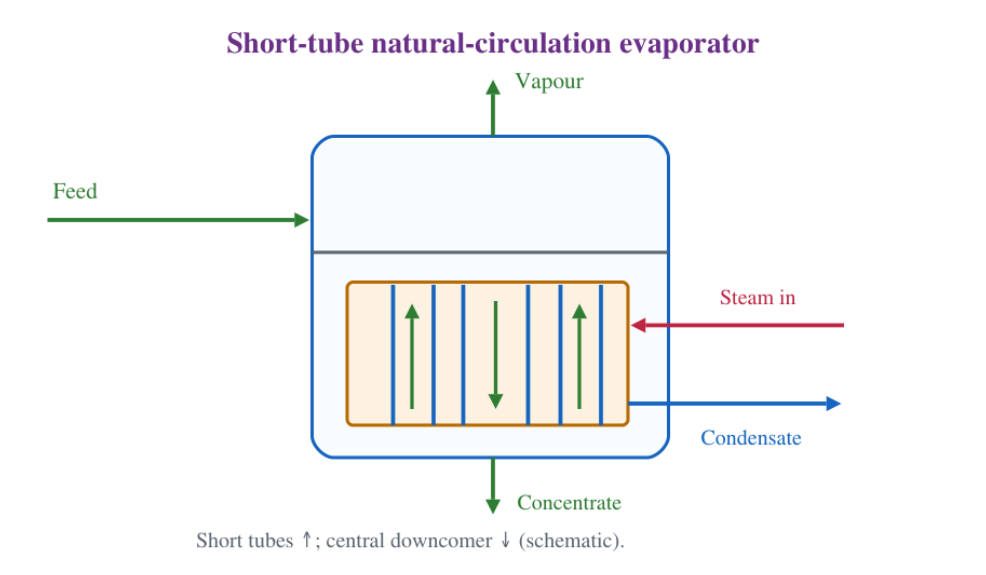
A short-tube calandria, central downcomer and vapour space; arrows indicate the main paths.
Steam condenses outside the short vertical tubes. Liquor and vapour rise in heated tubes and liquid returns through a central downcomer. It is simple and used for relatively low-viscosity solutions.
2. Falling-film evaporator
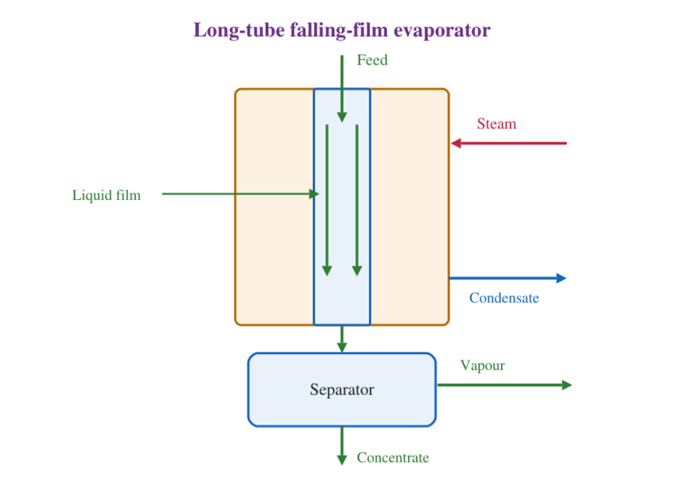
A wetted tube, surrounding steam space and a downstream separator.
Feed is distributed as a thin film down the heated long tubes; vapour and concentrate are separated. Short residence time is useful for heat-sensitive liquids, provided good wetting is maintained.
3. Forced-circulation evaporator
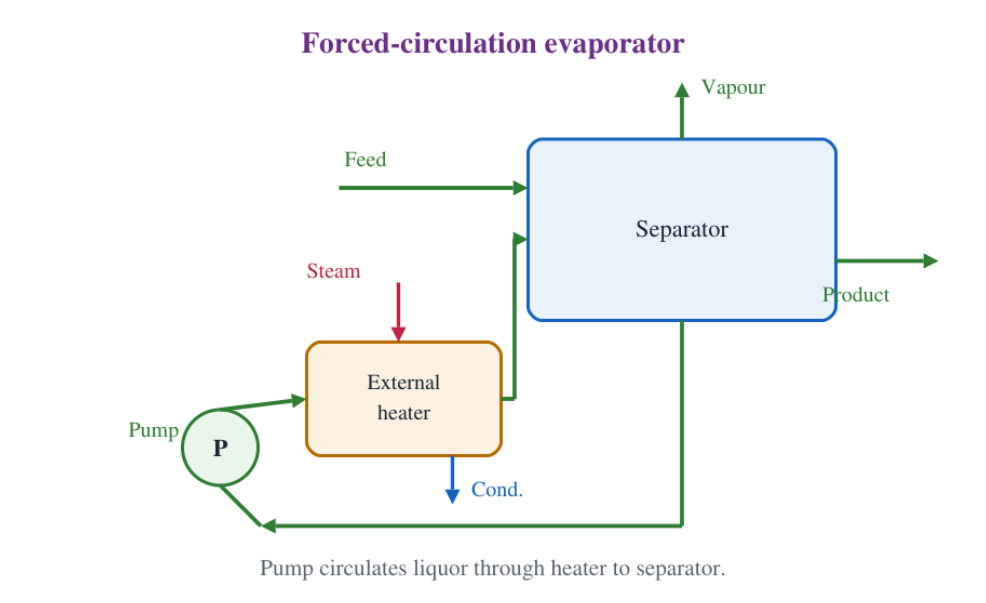
A pump circulates liquor through an external heater and separator.
A pump drives liquor through the heater to a lower-pressure separator where some solvent flashes. It handles viscous, scaling or crystallising solutions better, but uses pumping power.
A rising-film unit is another long-tube type. Multiple-effect operation is an arrangement of effects rather than a single mechanical evaporator type; vapour from one effect heats the next to save steam.
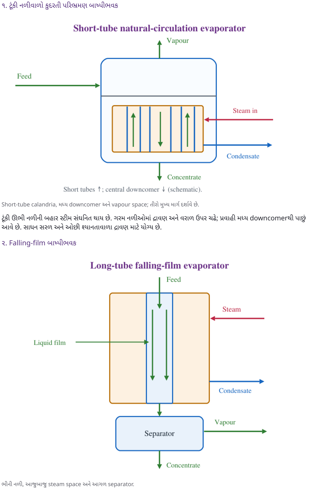
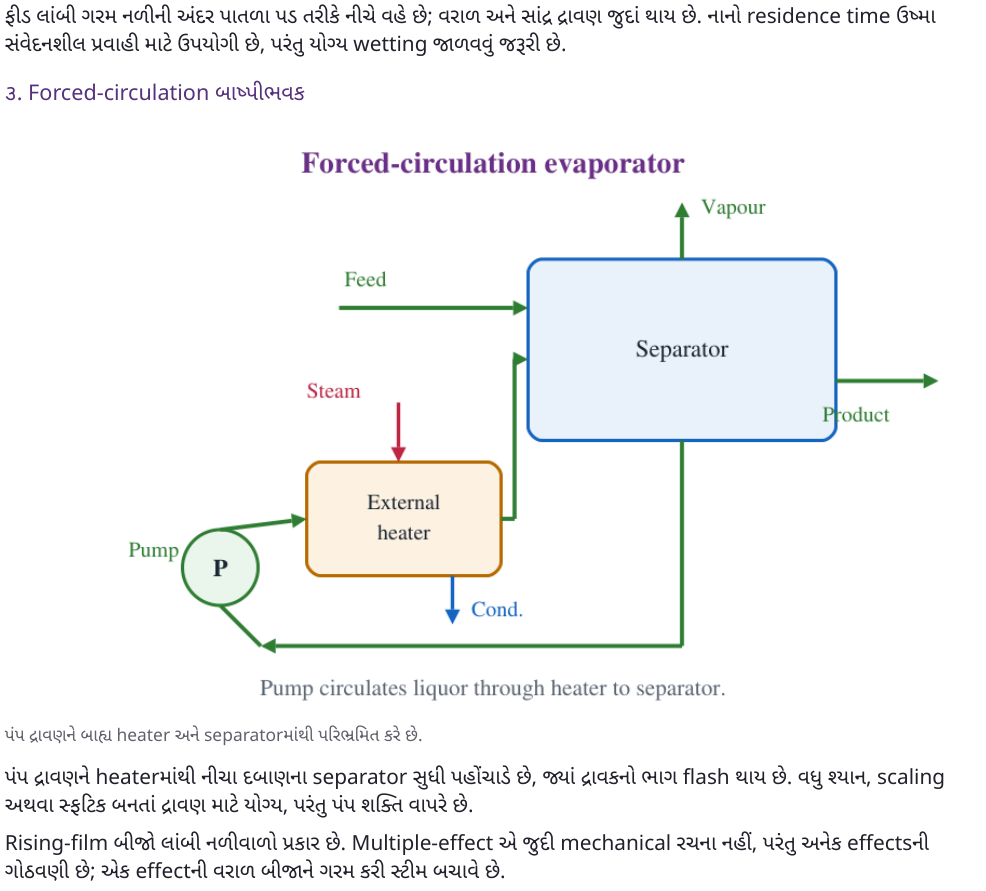
Q.5 (a) · Describe the importance of evaporation process in chemical industry with examples. · OR · 3 marks
Evaporation removes a volatile solvent, usually by boiling, to concentrate a less volatile solution.
• Concentrating caustic soda reduces product volume and storage or transport cost.
• Concentrating sugar solution prepares it for crystallisation.
• Concentrating dilute effluent or recovering solvent reduces downstream load; multiple-effect systems reuse vapour as heating utility.
Temperature-sensitive products may require vacuum and short heating time.
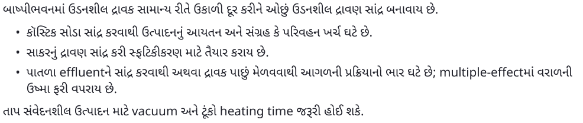
Q.5 (b) · Write short note on Duhring’s rule. · OR · 4 marks
Dühring’s rule: for a solution of fixed composition, its boiling temperature plotted against the boiling temperature of a reference pure solvent at the same pressure is approximately a straight line over a useful range of pressures.
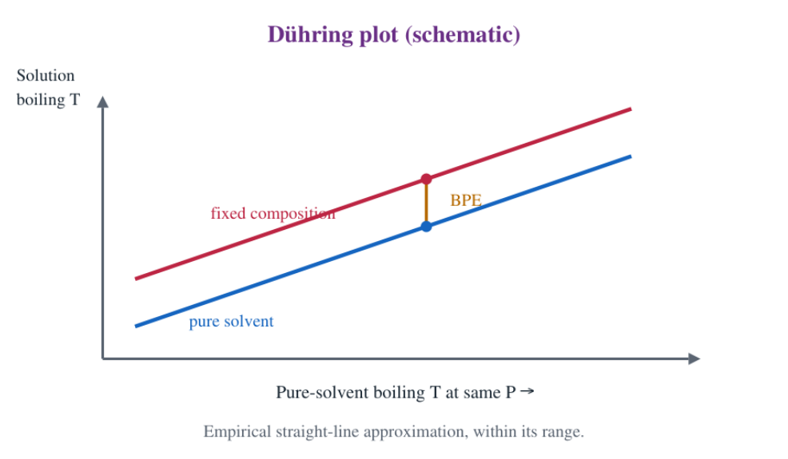
Each concentration has its own approximate line; vertical separation from the pure-solvent line gives BPE at the same pressure.
Use a known solvent boiling point at the operating pressure to estimate the solution boiling point and boiling-point elevation. This assists evaporator temperature-driving-force and area calculations.
The rule is empirical: use data for the correct solute concentration and pressure range; appreciable deviations can occur.

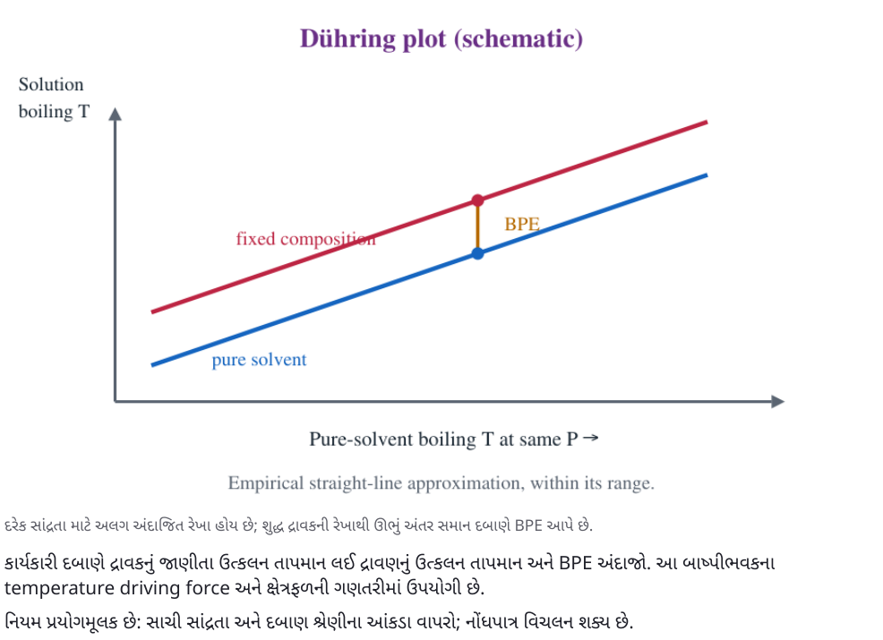
Q.5 (c) · Explain Double Pipe Heat Exchanger with diagram. · OR · 7 marks
A double-pipe exchanger has one pipe inside another. The two fluids flow through the inner tube and the surrounding annulus, separated by the tube wall.

Countercurrent arrangement: the two streams enter at opposite ends.
Heat passes from hot to cold through the inner pipe wall; a parallel-flow arrangement is also possible.
Construction and working
• The inner pipe carries one fluid; a larger outer pipe forms the annular passage for the second fluid. Connections and return bends can form multiple hairpins.
• In the illustrated countercurrent flow, hot fluid flows left to right inside the tube, and cold fluid flows right to left in the annulus.
• Convection on each side and conduction through the wall transfer heat without intentional mixing. Counterflow often gives a larger LMTD than parallel flow for the same terminal temperatures.
Use and limitations
The unit is simple, accessible for cleaning and suitable for small duties or high pressures. Large duties require many hairpins and more space, so shell-and-tube or plate exchangers may be more economical.
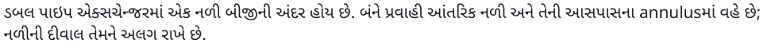
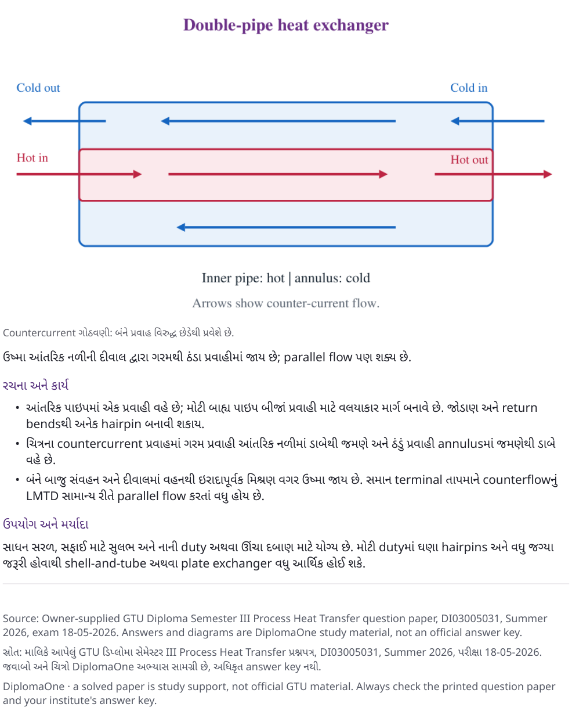